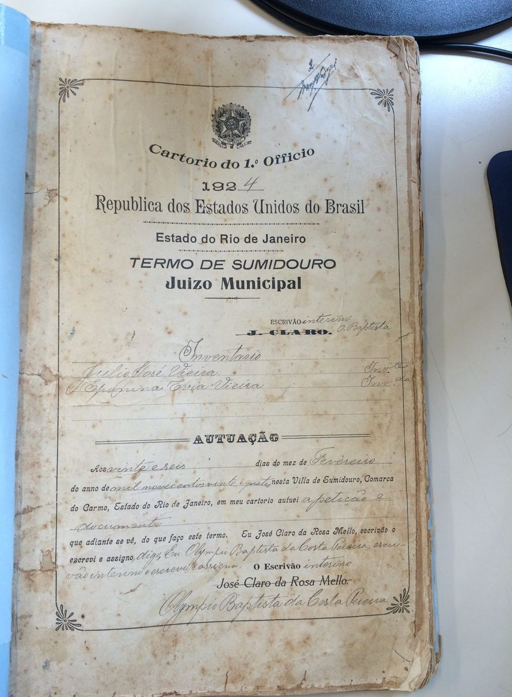
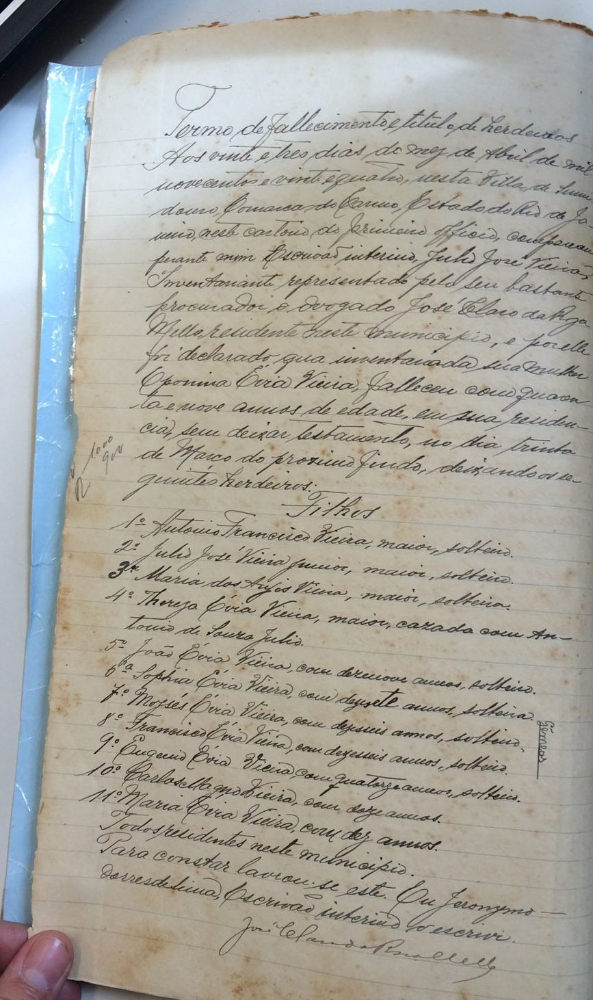
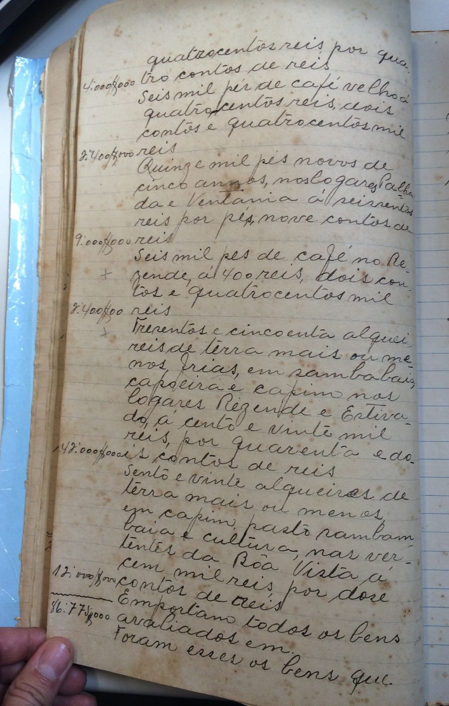
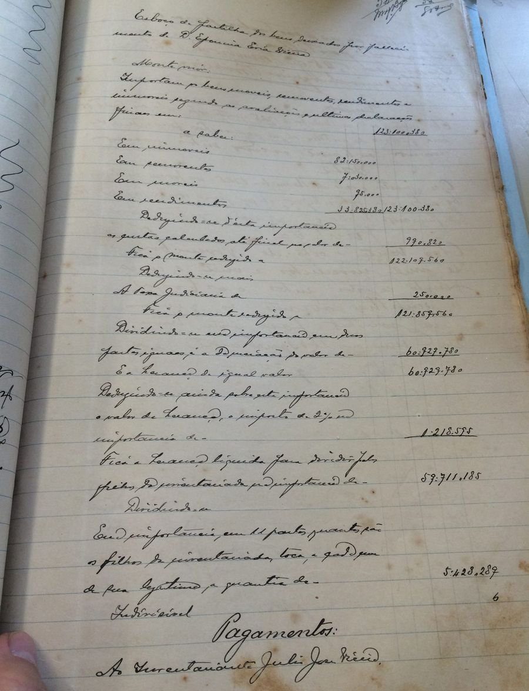

What Julio and Eponina owned: reading a 1924 inventory and a 1946 willO que Julio e Eponina possuíam: lendo um inventário de 1924 e um testamento de 1946Ce que possédaient Julio et Eponina : lecture d'un inventaire de 1924 et d'un testament de 1946
My great-great-grandmother Eponina Evia Vieira died on 30 March 1923. She left no will, eleven children and a coffee farm. Because of that, court clerks in Sumidouro spent the next three years writing down everything the family owned, what each thing was worth, and who would keep it.
I found the file ninety-three years later and photographed it on a table: 180 pictures in one hour, some sideways, some twice, and not in order. I have now read every page. This article is the full summary. The handwriting changes with each clerk and a few words remain doubtful; where I am not sure of a reading I say so.
The file in one table
Amounts are in mil-réis, written as in the file: 1:000$000 is one conto, a thousand mil-réis.
| Eponina dies at home, aged 49 | 30.03.1923 |
| Julio asks the court to open the inventory | 26.02.1924 |
| He is sworn in and declares heirs and property | 23.04.1924 |
| Appraisal of the house in Sumidouro | 06.05.1924 |
| Appraisal of the Fazenda Boa Vista | 14.05.1924 |
| The judge orders Julio to move the case on | 28.08.1924 |
| Final declarations: two years of income | 12.05.1925 |
| The accountant's calculation | 23.06.1925 |
| The calculation is approved by sentence | 21.09.1925 |
| Julio asks to keep the farm as his half | 13.11.1925 |
| Draft of the division | 28.11.1925 |
| Deed of division | 28.12.1925 |
| Inheritance tax paid | 29.12.1925 |
| The division is confirmed by sentence | 08.04.1926 |
| Last note in the file | 06.02.1928 |

How it started
The inventory was opened before the municipal judge of the Termo de Sumidouro, Comarca do Carmo, at the Cartório do 1º Ofício. The applicant is Julio José Vieira, described as a landowner living in the municipality. He acts through José Claro da Rosa Mello, a widowed lawyer and landowner of the town whom later pages call "Coronel", and Dr Pery Valentim, a lawyer from Nova Friburgo. The adult children signed their own power of attorney to the same man on 15 April 1924.
On 23 April 1924 Julio took the oath as administrator before the judge, Dr Cesino de Carvalho Paiva. A copy of the death record was added: Eponina had died at home, aged 49, without a will.
The family in April 1924
| Antônio Francisco | adult, single |
| Julio José Junior | adult, single |
| Maria dos Anjos | adult, single |
| Thereza | married to Antonio de Souza Julio |
| João | 19 |
| Sophia | 17 |
| Moysés | 16 |
| Francisco | 16 |
| Eugenio | 14 |
| Carlos Magno | 12 |
| Maria | 10 |
Seven of the eleven were minors, so the court gave them a guardian for the case (a curador à lide), and the public prosecutor's deputy had to approve every step. The file also records a wedding in passing: in July 1925 a farmer named Sebastião Augusto Ferreira joins the case "as head of his wife", Maria dos Anjos. She had married between the two dates.

Two properties and a debt
In Sumidouro, close to the town, the chácara Barra de São Lourenço: a house roofed with tiles, with a wooden floor, whitewashed, fitted with shelving and a counter for trade, with a second small house used as a corn crib, on about a quarter of an alqueire. It bordered the Paquequer river, the São Lourenço stream and farm, and the lands of a widow, Dona Anna Freitas. The shop fittings suggest the family once kept a store there. By 1925 the house was let for 60$000 a month.
In Aparecida, then the third district of Sapucaia, the Fazenda Boa Vista with the adjoining lands called Lagoa, Estivado and Rezende: a main house, houses for tenant workers (colonos), a coffee mill, a cane mill, a corn mill and a granary, a stone drying yard, coffee fields and fenced pasture, on roughly 460 alqueires of forest, grass, scrub and cropland, partly across the boundary in Sumidouro. The neighbours named are the Fazenda Santo Antônio, the Fazenda Baião of Henrique Frossard, the Fazenda São Lourenço of Manoel Mendes, the Fazenda Caeté and five smaller owners.
The estate also had 6:300$864 to receive from the commercial liquidation of the late Elias Auad. It was never counted. In November 1925 Julio told the court he had not been able to collect it, and it was left for a later, supplementary division if anything ever came in. The file shows none.
The appraisal in Sumidouro
On 6 May 1924 the judge himself went to the chácara with the lawyer, two appraisers chosen by the family (José Rodrigues Cardoso and João Pedro Schuenck), one for the State Treasury (Carlos Florenciano) and a bailiff. The orchard listed in February was left out "because it no longer exists".
| The house | 1:900$000 |
| Shop shelving | 150$000 |
| Counter | 50$000 |
| House used as corn crib | 100$000 |
| A quarter of land in grass | 300$000 |
| Total | 2:500$000 |
The appraisal of Boa Vista
The farm lay in another judicial district, so the judge of Sumidouro wrote a formal letter (a carta precatória) asking the judge of Sapucaia, Dr Americo Lobo Leite Pereira Junior, to have it appraised. A third appraiser, Arlindo Moreira Gomes, was sworn in at the Sapucaia court house on 9 May. The three men spent three days on the farm and signed their report at Aparecida on 14 May 1924. Julio signed with them, in his own hand.
| Furniture: a rough dining table, two wall clocks, six old chairs, two wooden beds | 95$000 |
| 12 pack mules, some very old, at 300$ | 3:600$000 |
| 6 yokes of oxen at 250$ | 1:500$000 |
| 10 breeding cows at 97$ | 970$000 |
| A small chestnut horse, a bull, 3 heifers, 15 pigs, 2 old carts | 960$000 |
| Main house, "in complete ruin", with a lean-to | 2:000$000 |
| Store house, granary, and the stone coffee-mill house | 2:400$000 |
| 22 houses for colonos, tiled or thatched, some in poor state | 1:320$000 |
| Iron cane mill, two boiling pans, cornmeal mill, a damaged wooden wheel, idle coffee machinery | 2:130$000 |
| 37,000 coffee trees at 400 or 600 réis each | 17:800$000 |
| 350 alqueires of "cold lands" at Rezende, at 120$ | 42:000$000 |
| 120 alqueires on the slopes of the farm, at 100$ | 12:000$000 |
| Total | 86:775$000 |

The picture is of a farm past its best years. The big house is a ruin, the coffee machinery is out of use, some of the mules are very old. But 15,000 of the coffee trees are under five years old, planted at two places called Palhada and Ventania: somebody was replanting.
The appraisal itself cost 392$950: 126$000 for each of the three appraisers, including three days of travel, and the rest in court fees and stamps. The State collector in Sapucaia took the opportunity to note that the land tax for 1921, 1922, 1923 and 1924 had not been paid, and the judge ordered that it be settled before the division could be approved.
What the farm earned
Then nothing happens for a year. In August 1924 the judge has Julio notified to move the case forward "under the penalties of the law". The next paper is dated May 1925, and it explains the delay usefully: the final declarations report two coffee harvests since Eponina's death.
| Coffee, 1923 harvest | 14:981$380 |
| Coffee, 1924 harvest | 17:284$000 |
| Rent of the house in Sumidouro, 26 months at 60$ | 1:560$000 |
| Income | 33:825$380 |
So the coffee brought in about 16 contos a year, close to a fifth of the appraised value of the whole farm. The declarations add that some cereals grown on the farm were used for its upkeep, that the estate neither owed nor was owed anything, and that Julio would pay the costs, the taxes and the lawyer out of his own pocket.
The calculation
| Real estate | 82:150$000 |
| Livestock | 7:030$000 |
| Furniture | 95$000 |
| Income | 33:825$380 |
| Gross estate | 123:100$380 |
| Court costs | − 990$820 |
| Judicial fee | − 250$000 |
| Julio's half (meação) | 60:929$780 |
| The children's half | 60:929$780 |
| Inheritance tax, 2% | − 1:218$595 |
| Each of the eleven children | 5:428$289 |

Who got what
This is the part I had not read before. On 13 November 1925 Julio asked that his half be made up of the Fazenda Boa Vista with its improvements, the chácara, the animals and the furniture. The children's lawyer, the guardian, the prosecutor's deputy and the State collector all agreed, the deputy adding "without prejudice to the heirs". The division was written out on 28 December 1925.
| Julio: all furniture and animals; every building and machine; 31,000 coffee trees; the 120 alqueires on the slopes; the chácara; the rest in money | 60:929$780 |
| Maria, Carlos Magno, Eugenio (the three youngest), each: 30 alqueires at Rezende, 2,000 coffee trees, 1:028$289 in money | 5:428$289 |
| The other eight, each: 32½ alqueires at Rezende, 1:528$289 in money | 5:428$289 |
| Set aside for costs and taxes, from the income | 2:459$415 |
In plain terms: the father kept the working farm, and the children received the 350 alqueires of "cold lands" at Rezende, cut into eleven strips laid side by side, each described as "following on" from a brother's or sister's. The order runs from the youngest upward: Maria, Carlos Magno, Eugenio, Francisco, Moysés, Sophia, João, Thereza, Maria dos Anjos, Julio Junior, Antônio Francisco. With seven of them under age and living with him, Julio in practice went on running all of it.
Adding up the columns, I found a slip that nobody caught in 1925. The house in Sumidouro, appraised at 1:900$000, is written into Julio's share as "nine hundred mil-réis". To make his total come out right, the division then gives him 1:000$000 more in cash than the income could supply: the money handed out on paper adds up to 34:825$374, against 33:825$380 received. The judge, the accountant and the clerk signed each of the twelve payments.
Taxes and the last pages
Julio paid the judicial fee of 250$000 on 18 September 1925 and the inheritance tax on 29 December 1925: 1:218$595, plus 127$943 in interest for 21 months of delay, 1:346$600 in all.
In March 1926 he asked both tax offices for certificates that he owed nothing, and signed the requests himself. They are the most surprising pages of the file, because they describe his land as the tax books saw it. In Sapucaia: the property "Rezende", 370 alqueires, valued at 120 contos. In Sumidouro: "Boa Vista" with 90 alqueires valued at 45 contos, and three smaller properties that the inventory never mentions, "Cachoeira", "Alto" with 5 alqueires, and a 14-alqueire property whose name I read as "Poço do Lambary". The tax values are well above the appraisal, 120$ to 130$ against more than 300$ per alqueire. I do not know why the three small properties were left out; they may have been bought after 1923.
The district judge confirmed the division by sentence on 8 April 1926, "awarding to the interested parties their respective shares". The last page is dated 6 February 1928: a new clerk, Manoel Coelho Magalhães Baptista, certifies that the file reached him as it stood, "without the sentence having been carried out", and passes it to a new judge. Nothing follows. The formal titles for the children's strips of land may never have been issued.
The people of the court
A small town's whole legal world passes through these pages. Judges: Dr Cesino de Carvalho Paiva (1924), then the substitute José Eugenio de Aquino Pinheiro, who signed most of 1925, then Dr Collatino de Araujo Góes (1926) and Dr José Faustino Porto Filho (1928). Clerks: Jeronymo Torres de Lima, then Gumercindo Bouchardet, who was also the notary. Accountant and divider: Antonio Corrêa de Mattos. For the minors: Orestes Fernandes de Carvalho, and after him Antonio Joaquim Fernandes. For the public prosecutor: Heitor de Oliveira Neves. For the State: the collectors José Gualberto da Cruz Alves in Sapucaia and, in Sumidouro, the same Orestes Fernandes de Carvalho, who had to give up being the children's guardian when he became tax collector.
How much was that?
I have not tried to convert 1924 mil-réis into today's money; any single number would be misleading. The file itself gives better yardsticks. At the appraisers' own prices the estate was worth about 1,270 cows, or 410 pack mules. Each child's share was worth eighteen mules. One year of coffee paid for the appraisal forty times over.
The land is easier to picture. The appraisal counts 470 alqueires. The alqueire was not one fixed measure: at 2.42 hectares, the smaller one in common use, that is about 1,140 hectares; at 4.84 hectares, the larger one, about 2,270. Either way it was a substantial property.
For scale against today's map (IBGE figures): the farm covered between 11 and 23 square kilometres. The whole municipality of Sumidouro has 413 km², Sapucaia 541 km² and Três Rios 323 km². So Julio and Eponina held something like 3 to 5 per cent of a territory the size of Sumidouro, or 4 to 7 per cent of one the size of Três Rios. It was not the size of a town's territory, but it was far larger than a town itself: the built-up area of Sumidouro today is about 2 km², and that of Sapucaia about 4 km². The farm was five to ten times the first.
The will, twenty years later
The second file is dated 1946, from the Cartório do 2º Ofício. On 8 July 1946 the notary Euclides Ribeiro Malta was called to a house at Rua Linha Férrea, number 4, in Sumidouro. Julio, a widower, was ill but, the notary writes, of sound mind.
He states that he was born in the municipality of Teresópolis on 6 November 1872, the son of Tolentino José Vieira and Rosa Candida Vieira. He lists the eleven children of his marriage; Carlos Magno had died by then, leaving a widow, Noemia. Then comes the reason for the will. After Eponina's death he had lived with Enoe Rodrigues de Aguiar, who had also died, and they had six children: Margarida, Geraldo, Malvina, Sebastião, Tolentino and Julio. They had been registered as illegitimate. He now recognises them as his children "for all purposes of law", with the same rights as the others.
The rest is practical. The shares of Enoe's children are to be taken from the Fazenda do Rosa e Baião. The other children take theirs from the adjoining land, in order of age, except where one of them has already built, who keeps the place where his improvements stand. Every share is given with a clause of lifelong inalienability, so that none of them could sell. His brother Antonio José Vieira is named guardian of the minor children and first executor, followed by his sons Moysés and Antônio Francisco.
The witnesses give a small portrait of the town: Dr Carolino Ribeiro de Moura, physician; Manoel José Pereira and Adelino de Jesus Antunes, Portuguese merchants; Antonio Ferreira Netto, landowner; and Carlos Florenciano, an Italian landowner, the same man who had appraised the chácara for the State in 1924.
On 16 September 1946 Antonio José Vieira presented the will to the judge, in the town hall, as the will "with which Julio José Vieira died". According to the family tree he had died on 2 September, eight weeks after dictating it. He was 73.

I have now read the pages of the 1946 file that follow the will. They are short and procedural. On 17 September the substitute judge, João de Aquino Pinheiro, ordered the will registered and the first executor summoned to accept the charge. The clerk, Manoel Pereira Pimenta, wrote to Antonio José Vieira the next day, entered the will in register book number 2 on 19 September and sent the file to the state collector, who transcribed it on the 25th; the stamp duty was Cr$21.50, for 190 lines. A term of the executor's oath dated 25 September follows, but in my photograph the tax receipt lies over it and I cannot read its text. On 18 October a new judge found that an earlier order had not been carried out and sent the file to the public prosecutor; the clerk answered that it had been carried out in full and that he did not know how to comply with the new one.
The last page is dated 2 January 1948. The clerk certifies that he made authentic copies of the file, handed them to the administrator of the estate and archived it. So by then there was an administrator, and therefore an inventory of Julio's own estate: a third file, which I have not found.
What the two files say together
Read side by side, the two files tell one story. In 1925 the children received strips of land on paper and the father kept the farm. In 1946 he is still dividing land among his children, "in order of age", and forbidding them to sell it, which suggests that the 1925 strips were never really separated. The 1946 farm is called Rosa e Baião; in 1924 Baião was the name of the neighbouring farm of Henrique Frossard. Whether Julio bought his neighbour's land, I do not know yet.
Still open: the inventory of Julio's own estate, which the 1948 note implies; the land registry entries for Boa Vista, Rezende and Rosa e Baião; and what became of the store that the shelving and the counter once served.
Minha trisavó Eponina Evia Vieira morreu em 30 de março de 1923. Não deixou testamento; deixou onze filhos e uma fazenda de café. Por isso, os escrivães de Sumidouro passaram os três anos seguintes anotando tudo o que a família possuía, quanto valia cada coisa e quem ficaria com ela.
Encontrei o processo noventa e três anos depois e o fotografei sobre uma mesa: 180 fotos em uma hora, algumas de lado, algumas repetidas, e fora de ordem. Agora li todas as páginas. Este artigo é o resumo completo. A letra muda a cada escrivão e algumas palavras continuam duvidosas; onde não tenho certeza da leitura, eu aviso.
O processo em uma tabela
Os valores estão em mil-réis, escritos como no processo: 1:000$000 é um conto, mil mil-réis.
| Eponina morre em casa, aos 49 anos | 30.03.1923 |
| Julio pede a abertura do inventário | 26.02.1924 |
| Presta compromisso e declara herdeiros e bens | 23.04.1924 |
| Avaliação da chácara em Sumidouro | 06.05.1924 |
| Avaliação da Fazenda Boa Vista | 14.05.1924 |
| O juiz intima Julio a dar andamento | 28.08.1924 |
| Declarações finais: dois anos de rendimentos | 12.05.1925 |
| Cálculo do contador | 23.06.1925 |
| O cálculo é julgado por sentença | 21.09.1925 |
| Julio pede a fazenda como sua meação | 13.11.1925 |
| Esboço da partilha | 28.11.1925 |
| Auto de partilha | 28.12.1925 |
| Imposto de transmissão causa mortis pago | 29.12.1925 |
| A partilha é julgada por sentença | 08.04.1926 |
| Última anotação do processo | 06.02.1928 |
Como começou
O inventário foi aberto perante o juiz municipal do Termo de Sumidouro, Comarca do Carmo, no Cartório do 1º Ofício. O requerente é Julio José Vieira, descrito como proprietário residente no município. Ele age por meio de José Claro da Rosa Mello, advogado viúvo e proprietário na vila, que páginas posteriores chamam de "Coronel", e do Dr. Pery Valentim, advogado de Nova Friburgo. Os filhos maiores assinaram sua própria procuração ao mesmo advogado em 15 de abril de 1924.
Em 23 de abril de 1924 Julio prestou compromisso de inventariante perante o juiz, Dr. Cesino de Carvalho Paiva. Juntou-se uma cópia do registro de óbito: Eponina morrera em casa, aos 49 anos, sem testamento.
A família em abril de 1924
| Antônio Francisco | maior, solteiro |
| Julio José Junior | maior, solteiro |
| Maria dos Anjos | maior, solteira |
| Thereza | casada com Antonio de Souza Julio |
| João | 19 |
| Sophia | 17 |
| Moysés | 16 |
| Francisco | 16 |
| Eugenio | 14 |
| Carlos Magno | 12 |
| Maria | 10 |
Sete dos onze eram menores, por isso o juízo lhes deu um curador à lide, e o adjunto do promotor público teve de concordar com cada passo. O processo também registra, de passagem, um casamento: em julho de 1925 um lavrador chamado Sebastião Augusto Ferreira entra nos autos "por cabeça de sua mulher", Maria dos Anjos. Ela se casara entre as duas datas.
Duas propriedades e uma dívida
Em Sumidouro, perto da vila, a chácara Barra de São Lourenço: uma casa coberta de telhas, assoalhada e caiada, com armação e balcão para negócio, e uma segunda casinha que servia de paiol, em cerca de uma quarta de terra. Confrontava com o rio Paquequer, o córrego e a fazenda São Lourenço e as terras de uma viúva, Dona Anna Freitas. A armação de loja sugere que a família teve ali um comércio. Em 1925 a casa estava alugada por 60$000 ao mês.
Em Aparecida, então terceiro distrito de Sapucaia, a Fazenda Boa Vista com os terrenos anexos chamados Lagoa, Estivado e Rezende: casa de morada, casas de colonos, engenho de café, engenho de cana, moinho, paiol e tulhas, terreiro de pedra, lavoura de café e pasto cercado, em cerca de 460 alqueires de mato, capim, capoeira e cultura, parte deles já no município de Sumidouro. Os vizinhos citados são a Fazenda Santo Antônio, a Fazenda Baião de Henrique Frossard, a Fazenda São Lourenço de Manoel Mendes, a Fazenda Caeté e cinco proprietários menores.
O espólio tinha ainda 6:300$864 a receber da liquidação comercial do finado Elias Auad. Esse valor nunca entrou na conta. Em novembro de 1925 Julio declarou ao juízo que não tinha conseguido receber, e o crédito ficou para uma sobrepartilha, se algum dia entrasse alguma coisa. O processo não mostra nenhuma.
A avaliação em Sumidouro
Em 6 de maio de 1924 o próprio juiz foi à chácara com o advogado, dois avaliadores indicados pela família (José Rodrigues Cardoso e João Pedro Schuenck), um pela Fazenda Estadual (Carlos Florenciano) e um oficial de justiça. O pomar descrito em fevereiro ficou de fora "por não existir mais".
| A casa | 1:900$000 |
| Armação para negócio | 150$000 |
| Balcão | 50$000 |
| Casa que serve de paiol | 100$000 |
| Uma quarta de terra em capim | 300$000 |
| Total | 2:500$000 |
A avaliação da Boa Vista
A fazenda ficava em outra comarca; por isso o juiz de Sumidouro expediu uma carta precatória pedindo ao juiz de direito de Sapucaia, Dr. Americo Lobo Leite Pereira Junior, que mandasse avaliá-la. Um terceiro avaliador, Arlindo Moreira Gomes, prestou compromisso no fórum de Sapucaia em 9 de maio. Os três passaram três dias na fazenda e assinaram o laudo em Aparecida em 14 de maio de 1924. Julio assinou com eles, de próprio punho.
| Móveis: uma mesa tosca de jantar, dois relógios de parede, seis cadeiras velhas, dois catres de madeira | 95$000 |
| 12 burros de carga, alguns muito velhos, a 300$ | 3:600$000 |
| 6 juntas de bois a 250$ | 1:500$000 |
| 10 vacas de criar a 97$ | 970$000 |
| Um cavalo pequeno castanho, um touro, 3 novilhas, 15 porcos, 2 carros velhos | 960$000 |
| Casa de morada "em completa ruína", com um puxado | 2:000$000 |
| Casa de depósito, tulha e a casa de pedra do engenho de café | 2:400$000 |
| 22 casas de colonos, de telha ou sapé, algumas em mau estado | 1:320$000 |
| Engenho de ferro para cana, duas tachas, moinho de fubá, uma roda de madeira estragada, maquinismo de café inutilizado | 2:130$000 |
| 37.000 pés de café a 400 ou 600 réis | 17:800$000 |
| 350 alqueires de "terras frias" no Rezende, a 120$ | 42:000$000 |
| 120 alqueires nas vertentes da fazenda, a 100$ | 12:000$000 |
| Total | 86:775$000 |
O retrato é o de uma fazenda que já tinha vivido dias melhores. A casa grande está em ruína, o maquinismo de café está parado, alguns burros são muito velhos. Mas 15.000 pés de café têm menos de cinco anos, plantados em dois lugares chamados Palhada e Ventania: alguém estava replantando.
A própria avaliação custou 392$950: 126$000 para cada um dos três avaliadores, incluída a condução de três dias, e o resto em custas e selos. O coletor estadual de Sapucaia aproveitou para anotar que o imposto territorial de 1921, 1922, 1923 e 1924 não tinha sido pago, e o juiz mandou que fosse quitado antes do julgamento da partilha.
Quanto a fazenda rendeu
Depois, durante um ano, nada acontece. Em agosto de 1924 o juiz manda intimar Julio a prosseguir no inventário "sob as penas da lei". O papel seguinte é de maio de 1925, e o atraso acaba sendo útil: as declarações finais trazem duas safras de café desde a morte de Eponina.
| Café, safra de 1923 | 14:981$380 |
| Café, safra de 1924 | 17:284$000 |
| Aluguel da chácara, 26 meses a 60$ | 1:560$000 |
| Rendimentos | 33:825$380 |
O café rendia, portanto, cerca de 16 contos por ano, perto de um quinto do valor de avaliação da fazenda inteira. As declarações acrescentam que alguns cereais colhidos na fazenda foram usados no seu custeio, que o espólio não tinha dívidas ativas nem passivas, e que Julio pagaria as custas, os impostos e os honorários do advogado sem prejuízo para o monte.
O cálculo
| Imóveis | 82:150$000 |
| Semoventes | 7:030$000 |
| Móveis | 95$000 |
| Rendimentos | 33:825$380 |
| Monte-mor | 123:100$380 |
| Custas | − 990$820 |
| Taxa judiciária | − 250$000 |
| Meação de Julio | 60:929$780 |
| Herança dos filhos | 60:929$780 |
| Imposto de 2% | − 1:218$595 |
| Cada um dos onze filhos | 5:428$289 |
Quem ficou com o quê
Esta é a parte que eu ainda não tinha lido. Em 13 de novembro de 1925 Julio pediu que a sua meação fosse constituída pela Fazenda Boa Vista com as benfeitorias, pela chácara, pelos semoventes e pelos móveis. O advogado dos filhos, o curador, o adjunto do promotor e o coletor estadual concordaram, o adjunto acrescentando "sem prejuízo para os herdeiros". A partilha foi lançada em 28 de dezembro de 1925.
| Julio: todos os móveis e animais; todas as construções e máquinas; 31.000 pés de café; os 120 alqueires das vertentes; a chácara; o restante em dinheiro | 60:929$780 |
| Maria, Carlos Magno, Eugenio (os três mais novos), cada um: 30 alqueires no Rezende, 2.000 pés de café, 1:028$289 em dinheiro | 5:428$289 |
| Os outros oito, cada um: 32½ alqueires no Rezende, 1:528$289 em dinheiro | 5:428$289 |
| Separado para custas e impostos, dos rendimentos | 2:459$415 |
Em termos simples: o pai ficou com a fazenda em funcionamento, e os filhos receberam os 350 alqueires de "terras frias" do Rezende, cortados em onze faixas lado a lado, cada uma descrita como "em seguimento" à de um irmão ou irmã. A ordem vai do mais novo para o mais velho: Maria, Carlos Magno, Eugenio, Francisco, Moysés, Sophia, João, Thereza, Maria dos Anjos, Julio Junior, Antônio Francisco. Com sete deles menores e morando com ele, Julio na prática continuou administrando tudo.
Somando as colunas, encontrei um engano que ninguém percebeu em 1925. A casa de Sumidouro, avaliada em 1:900$000, aparece no quinhão de Julio como "novecentos mil réis". Para o total dele fechar, a partilha lhe dá então 1:000$000 a mais em dinheiro do que os rendimentos permitiam: o dinheiro distribuído no papel soma 34:825$374, contra 33:825$380 recebidos. O juiz, o partidor e o escrivão assinaram cada um dos doze pagamentos.
Impostos e as últimas páginas
Julio pagou a taxa judiciária de 250$000 em 18 de setembro de 1925 e o imposto de transmissão em 29 de dezembro de 1925: 1:218$595, mais 127$943 de juros por 21 meses de atraso, 1:346$600 ao todo.
Em março de 1926 ele pediu às duas coletorias certidões de que nada devia, e assinou os requerimentos de próprio punho. São as páginas mais surpreendentes do processo, porque descrevem as terras dele como os livros do imposto territorial as viam. Em Sapucaia: a propriedade "Rezende", com 370 alqueires, no valor de 120 contos. Em Sumidouro: "Boa Vista", com 90 alqueires no valor de 45 contos, e três propriedades menores que o inventário nunca menciona, "Cachoeira", "Alto", com 5 alqueires, e uma de 14 alqueires cujo nome leio como "Poço do Lambary". Os valores fiscais são bem maiores que os da avaliação: 120$ a 130$ contra mais de 300$ por alqueire. Não sei por que as três propriedades pequenas ficaram de fora; podem ter sido compradas depois de 1923.
O juiz de direito da comarca julgou a partilha por sentença em 8 de abril de 1926, "adjudicando aos interessados os seus respectivos quinhões". A última página é de 6 de fevereiro de 1928: um novo escrivão, Manoel Coelho Magalhães Baptista, certifica que recebeu os autos no estado em que se achavam, "sem que se houvesse cumprido a sentença", e os faz conclusos a um novo juiz. Não há mais nada. Os formais de partilha das faixas de terra dos filhos talvez nunca tenham sido expedidos.
As pessoas do foro
Todo o mundo jurídico de uma vila pequena passa por estas páginas. Juízes: Dr. Cesino de Carvalho Paiva (1924), depois o suplente José Eugenio de Aquino Pinheiro, que assinou quase tudo em 1925, depois o Dr. Collatino de Araujo Góes (1926) e o Dr. José Faustino Porto Filho (1928). Escrivães: Jeronymo Torres de Lima, depois Gumercindo Bouchardet, que era também o tabelião. Contador e partidor: Antonio Corrêa de Mattos. Pelos menores: Orestes Fernandes de Carvalho e, depois dele, Antonio Joaquim Fernandes. Pela promotoria: Heitor de Oliveira Neves. Pela Fazenda Estadual: os coletores José Gualberto da Cruz Alves, em Sapucaia, e, em Sumidouro, o mesmo Orestes Fernandes de Carvalho, que teve de deixar a curadoria dos menores quando assumiu a coletoria.
Quanto era isso?
Não tentei converter os mil-réis de 1924 em dinheiro de hoje; qualquer número único enganaria. O próprio processo dá réguas melhores. Pelos preços dos avaliadores, o monte valia cerca de 1.270 vacas, ou 410 burros de carga. O quinhão de cada filho valia dezoito burros. Um ano de café pagava quarenta vezes a avaliação.
A terra é mais fácil de imaginar. A avaliação conta 470 alqueires. O alqueire não era uma medida única: a 2,42 hectares, o menor em uso corrente, são cerca de 1.140 hectares; a 4,84 hectares, o maior, cerca de 2.270. De um jeito ou de outro, era uma propriedade considerável.
Para dar escala no mapa de hoje (números do IBGE): a fazenda cobria entre 11 e 23 quilômetros quadrados. O município inteiro de Sumidouro tem 413 km², Sapucaia 541 km² e Três Rios 323 km². Julio e Eponina tinham, portanto, algo como 3 a 5 por cento de um território do tamanho de Sumidouro, ou 4 a 7 por cento de um do tamanho de Três Rios. Não era do tamanho do território de um município, mas era muito maior que uma cidade: a área urbanizada de Sumidouro hoje é de cerca de 2 km², e a de Sapucaia, cerca de 4 km². A fazenda era de cinco a dez vezes a primeira.
O testamento, vinte anos depois
O segundo processo é de 1946, do Cartório do 2º Ofício. Em 8 de julho de 1946 o tabelião Euclides Ribeiro Malta foi chamado a uma casa na Rua Linha Férrea, número 4, em Sumidouro. Julio, viúvo, estava doente mas, escreve o tabelião, em seu perfeito juízo.
Ele declara ter nascido no município de Teresópolis em 6 de novembro de 1872, filho de Tolentino José Vieira e Rosa Candida Vieira. Enumera os onze filhos do casamento; Carlos Magno já havia morrido, deixando viúva, Noemia. Vem então a razão do testamento. Depois da morte de Eponina ele vivera com Enoe Rodrigues de Aguiar, também já falecida, e tiveram seis filhos: Margarida, Geraldo, Malvina, Sebastião, Tolentino e Julio. Tinham sido registrados como ilegítimos. Agora ele os reconhece como filhos "para todos os efeitos de direito", com os mesmos direitos dos outros.
O resto é prático. Os quinhões dos filhos de Enoe devem sair da Fazenda do Rosa e Baião. Os outros filhos recebem os seus nas terras vizinhas, por ordem de idade, salvo quem já tiver construído, que fica onde estão as suas benfeitorias. Todo quinhão vem com cláusula de inalienabilidade vitalícia, de modo que nenhum deles pudesse vender. O irmão Antonio José Vieira é nomeado tutor dos filhos menores e primeiro testamenteiro, seguido dos filhos Moysés e Antônio Francisco.
As testemunhas dão um pequeno retrato da vila: Dr. Carolino Ribeiro de Moura, médico; Manoel José Pereira e Adelino de Jesus Antunes, comerciantes portugueses; Antonio Ferreira Netto, proprietário; e Carlos Florenciano, proprietário italiano, o mesmo que avaliara a chácara pela Fazenda Estadual em 1924.
Em 16 de setembro de 1946 Antonio José Vieira apresentou o testamento ao juiz, no edifício da prefeitura, como o testamento "com que faleceu Julio José Vieira". Segundo a árvore da família, ele morrera em 2 de setembro, oito semanas depois de ditá-lo. Tinha 73 anos.
Agora li as páginas do processo de 1946 que vêm depois do testamento. São curtas e de rotina. Em 17 de setembro o juiz substituto, João de Aquino Pinheiro, mandou registrar o testamento e intimar o primeiro testamenteiro a aceitar o encargo. O escrivão, Manoel Pereira Pimenta, escreveu a Antonio José Vieira no dia seguinte, registrou o testamento no livro número 2 em 19 de setembro e remeteu os autos ao coletor estadual, que o transcreveu no dia 25; o selo custou Cr$21,50, por 190 linhas. Segue-se um termo de compromisso de testamenteiro datado de 25 de setembro, mas na minha fotografia o recibo do selo está por cima dele e não consigo ler o texto. Em 18 de outubro um novo juiz entendeu que um despacho anterior não fora cumprido e mandou os autos ao Ministério Público; o escrivão respondeu que ele fora cumprido por inteiro e que não sabia como cumprir o novo.
A última página é de 2 de janeiro de 1948. O escrivão certifica que extraiu cópias autênticas do processo, entregou-as ao inventariante e o arquivou. Portanto já havia um inventariante e, logo, um inventário dos bens do próprio Julio: um terceiro processo, que ainda não encontrei.
O que os dois processos dizem juntos
Lidos lado a lado, os dois processos contam uma história só. Em 1925 os filhos receberam faixas de terra no papel e o pai ficou com a fazenda. Em 1946 ele continua repartindo terras entre os filhos, "por ordem de idade", e proibindo que vendam, o que sugere que as faixas de 1925 nunca foram de fato separadas. A fazenda de 1946 chama-se Rosa e Baião; em 1924, Baião era o nome da fazenda vizinha, de Henrique Frossard. Se Julio comprou as terras do vizinho, ainda não sei.
Ainda em aberto: o inventário dos bens do próprio Julio, que a anotação de 1948 pressupõe; os registros de imóveis de Boa Vista, Rezende e Rosa e Baião; e o que foi feito da venda a que serviram a armação e o balcão.
Mon arrière-arrière-grand-mère Eponina Evia Vieira est morte le 30 mars 1923. Elle n'a pas laissé de testament ; elle a laissé onze enfants et une plantation de café. Les greffiers de Sumidouro ont donc passé les trois années suivantes à noter tout ce que la famille possédait, ce que valait chaque chose et à qui elle reviendrait.
J'ai retrouvé le dossier quatre-vingt-treize ans plus tard et je l'ai photographié sur une table : 180 photos en une heure, certaines de travers, certaines en double, et dans le désordre. J'ai maintenant lu toutes les pages. Cet article en est le résumé complet. L'écriture change avec chaque greffier et quelques mots restent douteux ; quand je ne suis pas sûr d'une lecture, je le dis.
Le dossier en un tableau
Les montants sont en mil-réis, écrits comme dans le dossier : 1:000$000 est un conto, soit mille mil-réis.
| Eponina meurt chez elle, à 49 ans | 30.03.1923 |
| Julio demande l'ouverture de l'inventaire | 26.02.1924 |
| Il prête serment et déclare héritiers et biens | 23.04.1924 |
| Estimation de la maison de Sumidouro | 06.05.1924 |
| Estimation de la Fazenda Boa Vista | 14.05.1924 |
| Le juge somme Julio de faire avancer l'affaire | 28.08.1924 |
| Déclarations finales : deux ans de revenus | 12.05.1925 |
| Calcul du comptable | 23.06.1925 |
| Le calcul est homologué par jugement | 21.09.1925 |
| Julio demande la plantation pour sa moitié | 13.11.1925 |
| Projet de partage | 28.11.1925 |
| Acte de partage | 28.12.1925 |
| Droits de succession payés | 29.12.1925 |
| Le partage est homologué par jugement | 08.04.1926 |
| Dernière mention du dossier | 06.02.1928 |
Comment tout a commencé
L'inventaire a été ouvert devant le juge municipal du Termo de Sumidouro, Comarca do Carmo, au Cartório do 1º Ofício. Le requérant est Julio José Vieira, décrit comme propriétaire résidant dans la commune. Il agit par l'intermédiaire de José Claro da Rosa Mello, avocat veuf et propriétaire du bourg, que des pages ultérieures appellent « Coronel », et du Dr Pery Valentim, avocat de Nova Friburgo. Les enfants majeurs ont signé leur propre procuration au même avocat le 15 avril 1924.
Le 23 avril 1924, Julio prêta serment comme administrateur devant le juge, le Dr Cesino de Carvalho Paiva. Une copie de l'acte de décès fut jointe : Eponina était morte chez elle, à 49 ans, sans testament.
La famille en avril 1924
| Antônio Francisco | majeur, célibataire |
| Julio José Junior | majeur, célibataire |
| Maria dos Anjos | majeure, célibataire |
| Thereza | mariée à Antonio de Souza Julio |
| João | 19 |
| Sophia | 17 |
| Moysés | 16 |
| Francisco | 16 |
| Eugenio | 14 |
| Carlos Magno | 12 |
| Maria | 10 |
Sept des onze étaient mineurs ; le tribunal leur donna donc un curateur pour la procédure (curador à lide), et le substitut du procureur dut approuver chaque étape. Le dossier enregistre aussi, en passant, un mariage : en juillet 1925, un cultivateur nommé Sebastião Augusto Ferreira entre dans la procédure « comme chef de sa femme », Maria dos Anjos. Elle s'était mariée entre les deux dates.
Deux propriétés et une créance
À Sumidouro, près du bourg, la chácara Barra de São Lourenço : une maison couverte de tuiles, planchéiée et blanchie à la chaux, équipée d'étagères et d'un comptoir de commerce, avec une seconde petite maison servant de grenier à maïs, sur environ un quart d'alqueire. Elle touchait la rivière Paquequer, le ruisseau et la ferme São Lourenço et les terres d'une veuve, Dona Anna Freitas. L'agencement de boutique laisse penser que la famille y a tenu un commerce. En 1925 la maison était louée 60$000 par mois.
À Aparecida, alors troisième district de Sapucaia, la Fazenda Boa Vista avec les terres attenantes dites Lagoa, Estivado et Rezende : maison de maître, maisons d'ouvriers agricoles (colonos), moulin à café, moulin à canne, moulin à maïs et greniers, aire de séchage en pierre, caféiers et pâturage clos, sur environ 460 alqueires de forêt, d'herbe, de friche et de cultures, en partie de l'autre côté de la limite, à Sumidouro. Les voisins cités sont la Fazenda Santo Antônio, la Fazenda Baião de Henrique Frossard, la Fazenda São Lourenço de Manoel Mendes, la Fazenda Caeté et cinq propriétaires plus modestes.
La succession avait aussi 6:300$864 à recevoir de la liquidation commerciale de feu Elias Auad. Cette somme n'a jamais été comptée. En novembre 1925, Julio déclara au tribunal qu'il n'avait pas pu la recouvrer, et elle fut réservée à un partage complémentaire si quelque chose rentrait un jour. Le dossier n'en montre aucun.
L'estimation à Sumidouro
Le 6 mai 1924, le juge se rendit en personne à la chácara avec l'avocat, deux experts choisis par la famille (José Rodrigues Cardoso et João Pedro Schuenck), un pour le Trésor de l'État (Carlos Florenciano) et un huissier. Le verger décrit en février fut écarté « parce qu'il n'existe plus ».
| La maison | 1:900$000 |
| Étagères de boutique | 150$000 |
| Comptoir | 50$000 |
| Maison servant de grenier à maïs | 100$000 |
| Un quart de terre en herbe | 300$000 |
| Total | 2:500$000 |
L'estimation de Boa Vista
La plantation se trouvait dans un autre ressort ; le juge de Sumidouro adressa donc une commission rogatoire (carta precatória) au juge de Sapucaia, le Dr Americo Lobo Leite Pereira Junior, pour la faire estimer. Un troisième expert, Arlindo Moreira Gomes, prêta serment au tribunal de Sapucaia le 9 mai. Les trois hommes passèrent trois jours sur place et signèrent leur rapport à Aparecida le 14 mai 1924. Julio signa avec eux, de sa main.
| Meubles : une table grossière, deux horloges murales, six vieilles chaises, deux lits de bois | 95$000 |
| 12 mulets de bât, certains très vieux, à 300$ | 3:600$000 |
| 6 paires de bœufs à 250$ | 1:500$000 |
| 10 vaches à 97$ | 970$000 |
| Un petit cheval bai, un taureau, 3 génisses, 15 porcs, 2 vieux chariots | 960$000 |
| Maison de maître « en ruine complète », avec un appentis | 2:000$000 |
| Dépôt, grenier et bâtiment en pierre du moulin à café | 2:400$000 |
| 22 maisons de colonos, en tuiles ou en chaume, certaines en mauvais état | 1:320$000 |
| Moulin à canne en fer, deux chaudières, moulin à farine de maïs, une roue de bois abîmée, machine à café hors d'usage | 2:130$000 |
| 37 000 caféiers à 400 ou 600 réis pièce | 17:800$000 |
| 350 alqueires de « terres froides » à Rezende, à 120$ | 42:000$000 |
| 120 alqueires sur les versants de la plantation, à 100$ | 12:000$000 |
| Total | 86:775$000 |
C'est le portrait d'une plantation qui a connu de meilleurs jours. La grande maison est en ruine, la machine à café ne sert plus, certains mulets sont très vieux. Mais 15 000 caféiers ont moins de cinq ans, plantés en deux lieux appelés Palhada et Ventania : quelqu'un replantait.
L'estimation coûta à elle seule 392$950 : 126$000 pour chacun des trois experts, trois jours de déplacement compris, le reste en frais de justice et en timbres. Le percepteur de l'État à Sapucaia en profita pour signaler que l'impôt foncier de 1921, 1922, 1923 et 1924 n'avait pas été payé, et le juge ordonna qu'il soit réglé avant l'homologation du partage.
Ce que rapportait la plantation
Puis il ne se passe rien pendant un an. En août 1924, le juge fait sommer Julio de poursuivre l'inventaire « sous les peines de la loi ». La pièce suivante date de mai 1925, et ce retard est utile : les déclarations finales rapportent deux récoltes de café depuis la mort d'Eponina.
| Café, récolte de 1923 | 14:981$380 |
| Café, récolte de 1924 | 17:284$000 |
| Loyer de la maison de Sumidouro, 26 mois à 60$ | 1:560$000 |
| Revenus | 33:825$380 |
Le café rapportait donc environ 16 contos par an, près d'un cinquième de la valeur estimée de toute la plantation. Les déclarations ajoutent que des céréales récoltées sur place ont servi à son entretien, que la succession n'avait ni dettes ni créances, et que Julio paierait de sa poche les frais, les impôts et l'avocat.
Le calcul
| Immeubles | 82:150$000 |
| Bétail | 7:030$000 |
| Meubles | 95$000 |
| Revenus | 33:825$380 |
| Masse brute | 123:100$380 |
| Frais de justice | − 990$820 |
| Taxe judiciaire | − 250$000 |
| Moitié de Julio (meação) | 60:929$780 |
| Moitié des enfants | 60:929$780 |
| Droits de succession, 2 % | − 1:218$595 |
| Chacun des onze enfants | 5:428$289 |
Qui a reçu quoi
C'est la partie que je n'avais pas encore lue. Le 13 novembre 1925, Julio demanda que sa moitié soit composée de la Fazenda Boa Vista avec ses installations, de la chácara, du bétail et des meubles. L'avocat des enfants, le curateur, le substitut du procureur et le percepteur donnèrent tous leur accord, le substitut ajoutant « sans préjudice pour les héritiers ». Le partage fut dressé le 28 décembre 1925.
| Julio : tous les meubles et animaux ; tous les bâtiments et machines ; 31 000 caféiers ; les 120 alqueires des versants ; la chácara ; le reste en argent | 60:929$780 |
| Maria, Carlos Magno, Eugenio (les trois plus jeunes), chacun : 30 alqueires à Rezende, 2 000 caféiers, 1:028$289 en argent | 5:428$289 |
| Les huit autres, chacun : 32½ alqueires à Rezende, 1:528$289 en argent | 5:428$289 |
| Réservé aux frais et impôts, sur les revenus | 2:459$415 |
En clair : le père garda l'exploitation en activité, et les enfants reçurent les 350 alqueires de « terres froides » de Rezende, découpés en onze bandes côte à côte, chacune décrite comme « faisant suite » à celle d'un frère ou d'une sœur. L'ordre va du plus jeune à l'aîné : Maria, Carlos Magno, Eugenio, Francisco, Moysés, Sophia, João, Thereza, Maria dos Anjos, Julio Junior, Antônio Francisco. Sept d'entre eux étant mineurs et vivant chez lui, Julio continua en pratique à tout diriger.
En additionnant les colonnes, j'ai trouvé une erreur que personne n'a relevée en 1925. La maison de Sumidouro, estimée à 1:900$000, figure dans la part de Julio pour « neuf cents mil-réis ». Pour que son total tombe juste, le partage lui attribue alors 1:000$000 de plus en argent que les revenus ne le permettaient : l'argent distribué sur le papier fait 34:825$374, contre 33:825$380 encaissés. Le juge, le comptable et le greffier ont signé chacun des douze paiements.
Impôts et dernières pages
Julio paya la taxe judiciaire de 250$000 le 18 septembre 1925 et les droits de succession le 29 décembre 1925 : 1:218$595, plus 127$943 d'intérêts pour 21 mois de retard, soit 1:346$600 en tout.
En mars 1926, il demanda aux deux perceptions des certificats attestant qu'il ne devait rien, et signa lui-même les requêtes. Ce sont les pages les plus surprenantes du dossier, car elles décrivent ses terres telles que les voyaient les registres de l'impôt foncier. À Sapucaia : la propriété « Rezende », 370 alqueires, évaluée à 120 contos. À Sumidouro : « Boa Vista », 90 alqueires évalués à 45 contos, et trois propriétés plus petites que l'inventaire ne mentionne jamais, « Cachoeira », « Alto », de 5 alqueires, et une de 14 alqueires dont je lis le nom « Poço do Lambary ». Les valeurs fiscales dépassent nettement l'estimation : 120$ à 130$ contre plus de 300$ par alqueire. J'ignore pourquoi les trois petites propriétés ont été omises ; elles ont pu être achetées après 1923.
Le juge de la comarca homologua le partage par jugement le 8 avril 1926, « adjugeant aux intéressés leurs parts respectives ». La dernière page est du 6 février 1928 : un nouveau greffier, Manoel Coelho Magalhães Baptista, certifie avoir reçu le dossier en l'état, « sans que le jugement ait été exécuté », et le transmet à un nouveau juge. Rien ne suit. Les titres des bandes de terre des enfants n'ont peut-être jamais été délivrés.
Les gens du tribunal
Tout le monde judiciaire d'un petit bourg défile dans ces pages. Juges : le Dr Cesino de Carvalho Paiva (1924), puis le suppléant José Eugenio de Aquino Pinheiro, qui signa presque tout en 1925, puis le Dr Collatino de Araujo Góes (1926) et le Dr José Faustino Porto Filho (1928). Greffiers : Jeronymo Torres de Lima, puis Gumercindo Bouchardet, également notaire. Comptable et répartiteur : Antonio Corrêa de Mattos. Pour les mineurs : Orestes Fernandes de Carvalho, puis Antonio Joaquim Fernandes. Pour le ministère public : Heitor de Oliveira Neves. Pour l'État : les percepteurs José Gualberto da Cruz Alves à Sapucaia et, à Sumidouro, le même Orestes Fernandes de Carvalho, qui dut abandonner la curatelle des enfants en devenant percepteur.
Combien cela représentait-il ?
Je n'ai pas cherché à convertir les mil-réis de 1924 en monnaie d'aujourd'hui ; un chiffre unique serait trompeur. Le dossier fournit de meilleurs repères. Aux prix des experts, la succession valait environ 1 270 vaches, ou 410 mulets de bât. La part de chaque enfant valait dix-huit mulets. Une année de café payait quarante fois l'estimation.
La terre est plus facile à se représenter. L'estimation compte 470 alqueires. L'alqueire n'était pas une mesure unique : à 2,42 hectares, le plus petit en usage courant, cela fait environ 1 140 hectares ; à 4,84 hectares, le plus grand, environ 2 270. Dans les deux cas, c'était une propriété considérable.
Pour donner l'échelle sur la carte d'aujourd'hui (chiffres de l'IBGE) : la plantation couvrait entre 11 et 23 kilomètres carrés. La commune entière de Sumidouro fait 413 km², Sapucaia 541 km² et Três Rios 323 km². Julio et Eponina détenaient donc de l'ordre de 3 à 5 pour cent d'un territoire de la taille de Sumidouro, ou 4 à 7 pour cent d'un territoire de la taille de Três Rios. Ce n'était pas la taille d'une commune, mais c'était bien plus grand qu'une ville : la zone bâtie de Sumidouro fait aujourd'hui environ 2 km², celle de Sapucaia environ 4 km². La plantation représentait cinq à dix fois la première.
Le testament, vingt ans plus tard
Le second dossier date de 1946 et vient du Cartório do 2º Ofício. Le 8 juillet 1946, le notaire Euclides Ribeiro Malta fut appelé dans une maison de la Rua Linha Férrea, numéro 4, à Sumidouro. Julio, veuf, était malade mais, écrit le notaire, sain d'esprit.
Il déclare être né dans la commune de Teresópolis le 6 novembre 1872, fils de Tolentino José Vieira et de Rosa Candida Vieira. Il énumère les onze enfants de son mariage ; Carlos Magno était déjà mort, laissant une veuve, Noemia. Vient alors la raison du testament. Après la mort d'Eponina, il avait vécu avec Enoe Rodrigues de Aguiar, décédée elle aussi, et ils avaient eu six enfants : Margarida, Geraldo, Malvina, Sebastião, Tolentino et Julio. Ils avaient été déclarés illégitimes. Il les reconnaît à présent comme ses enfants « à tous les effets de droit », avec les mêmes droits que les autres.
Le reste est pratique. Les parts des enfants d'Enoe doivent être prises sur la Fazenda do Rosa e Baião. Les autres enfants prennent les leurs sur les terres voisines, par ordre d'âge, sauf celui qui a déjà bâti, qui garde l'endroit où se trouvent ses constructions. Chaque part est assortie d'une clause d'inaliénabilité à vie, de sorte qu'aucun ne puisse vendre. Son frère Antonio José Vieira est nommé tuteur des enfants mineurs et premier exécuteur, suivi de ses fils Moysés et Antônio Francisco.
Les témoins donnent un petit portrait du bourg : le Dr Carolino Ribeiro de Moura, médecin ; Manoel José Pereira et Adelino de Jesus Antunes, commerçants portugais ; Antonio Ferreira Netto, propriétaire ; et Carlos Florenciano, propriétaire italien, celui-là même qui avait estimé la chácara pour l'État en 1924.
Le 16 septembre 1946, Antonio José Vieira présenta le testament au juge, à la mairie, comme le testament « avec lequel est décédé Julio José Vieira ». D'après l'arbre familial, il était mort le 2 septembre, huit semaines après l'avoir dicté. Il avait 73 ans.
J'ai maintenant lu les pages du dossier de 1946 qui suivent le testament. Elles sont brèves et de pure procédure. Le 17 septembre, le juge suppléant, João de Aquino Pinheiro, ordonna l'enregistrement du testament et la convocation du premier exécuteur pour qu'il accepte la charge. Le greffier, Manoel Pereira Pimenta, écrivit à Antonio José Vieira le lendemain, inscrivit le testament au registre numéro 2 le 19 septembre et transmit le dossier au percepteur de l'État, qui le transcrivit le 25 ; le droit de timbre fut de Cr$21,50, pour 190 lignes. Suit un acte de serment de l'exécuteur daté du 25 septembre, mais sur ma photographie le reçu du timbre le recouvre et je ne peux pas en lire le texte. Le 18 octobre, un nouveau juge estima qu'une ordonnance antérieure n'avait pas été exécutée et transmit le dossier au ministère public ; le greffier répondit qu'elle l'avait été entièrement et qu'il ne savait pas comment exécuter la nouvelle.
La dernière page est datée du 2 janvier 1948. Le greffier certifie qu'il a tiré des copies authentiques du dossier, les a remises à l'administrateur de la succession et l'a archivé. Il y avait donc alors un administrateur et, par conséquent, un inventaire des biens de Julio lui-même : un troisième dossier, que je n'ai pas retrouvé.
Ce que les deux dossiers disent ensemble
Lus côte à côte, les deux dossiers racontent une seule histoire. En 1925, les enfants reçurent des bandes de terre sur le papier et le père garda la plantation. En 1946, il partage encore des terres entre ses enfants, « par ordre d'âge », et leur interdit de vendre, ce qui laisse penser que les bandes de 1925 n'ont jamais été réellement séparées. La ferme de 1946 s'appelle Rosa e Baião ; en 1924, Baião était le nom de la ferme voisine, celle de Henrique Frossard. Julio a-t-il acheté les terres de son voisin ? Je ne le sais pas encore.
Restent ouverts : l'inventaire des biens de Julio lui-même, que la note de 1948 suppose ; les inscriptions foncières de Boa Vista, Rezende et Rosa e Baião ; et ce qu'est devenue la boutique que desservaient jadis les étagères et le comptoir.